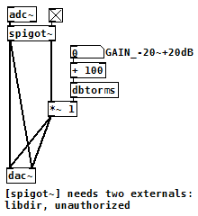
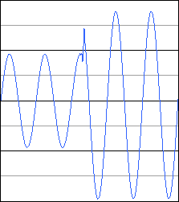

バイパススイッチ/ブースター（Pure Data パッチ）
2017年09月09日 カテゴリー：Pure Data
デジタルエフェクターの場合でも、物理的にトゥルーバイパスにするのも一つの手だと思います。しかし、それだとフットスイッチに別の機能を割り当てることができないので、Pure Data(Pd)のパッチ内でエフェクトオン・オフを切り替えることにします。
（このパッチをダウンロード）
エフェクトオン時（トグルスイッチが[×]の時）に[spigot~]の左アウトレットから右アウトレットに出力が切り替わります。右アウトレットからの出力に対し、様々なエフェクト処理を行っていく形になります。
エフェクト切替時には下図のように、波形が途切れて雑音が出ます。[line~]で音量を滑らかに変化させれば雑音を消すこともできますが、ごくわずかなので気にしないことにします。

エフェクト処理は、音量を増減させるだけです。ナンバーボックスで変化させる量をdBで指定します。PdでのdB値は、100が基準（等倍）なので+100しています。そして、[dbtorms]で実際計算に使う倍率へ変換します。
※RasPd2ではSN比改善のため入力で+9dB、出力で-9dBしています。その関係で、入出力が最大0.32Vrms程度です。あまりないとは思いますが、単体でクリーンブースターとして使う場合には力不足となってしまいます。